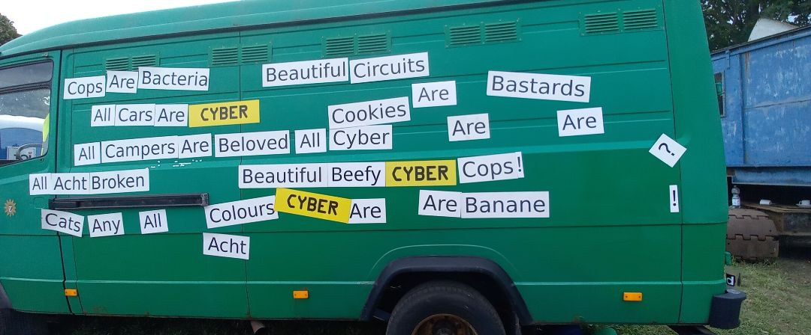
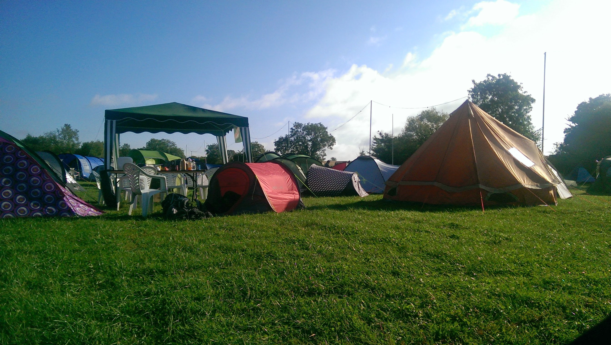

So I’m sitting in Berlin airport, waiting to get home from Chaos Communication Camp 2023. It was, to put it bluntly, bloody fabulous… and my god, I’ve missed hanging out with a whole field of awesome nerds.
The enforced loneliness of the pandemic made me do a fair bit of reflecting on which social interactions I valued, and which I’m really not particularly fussed about, and community events organised by wholesome geeky folk to share what they’re passionate about are absolutely in the former. The younger me who nervously made his way to EMF Camp 2014 all by himself had no idea what he was signing up for, but I’ll be forever glad I did (and I’m still bitter we’ll never get another Nine Worlds).

But with that gushing out of the way, here are a few interesting lessons I picked up this year…and I’ll hopefully see everyone again for EMF 2024!
The hackers aren’t excited by AI…
Now, this is far from universal given CCC are a quite distinct, very German subset of the hacker community (and DEFCON last week definitely had some LLM excitement), but the lack of LLM talks in the schedule was stark… and and when they were mentioned, it was mostly critical. In hindsight, this isn’t so surprising given actual open-source LLMs essentially don’t exist and are dominated by US behemoths.
… but they’re still excited by SPACE
Honestly, I was not ready for the amount of excitement about space. I’d mostly forgotten Starlink was a thing, but there was real enthusiasm for the impact of reduced cheap satelite launches. Given I know bugger all about space launches, microsats and so on, it was striking to meet more people who wanted to talk about Planet, OneWeb and Relativity Space than OpenAI.
Twitter is dead, long live the Fediverse
I moved over to Mastodon earlier this year, but it’s at times been tough to use it as my primary social media given how few of my colleagues have followed…annoyingly, Twitter still served up more relevant content, more frequently. Not so at camp: #CCCamp23 was buzzing during the entire event. Again, I’m not sure how much of this comes down to Europe versus the US (with the German government hosting it’s own server) but especially given just how much the AI and machine learning communities remained glue to the birdsite, this was striking.
People are angry about digital identity
Now, yes, Germany is especially privacy focused (and I still think paying for everything with cash is mad), but European efforts to introduce digital identity got a fair few mentions, and never in a good way. CCCamp is a broad church, with villages of techno-communists a few minutes walk from crypto-libertarians, but all of them were concerned by formalised state intrusion into the digital space.
Closed systems are still insecure
Okay, this one is a little niche (I needed a list of 5, sue me) but one of my highlight talks was All Cops Are Broadcasting, discussing how security researchers had compromised the TETRA (Airwave in the UK) communications system used by most police forces. I’ve never really thought much about the architecture behind Airwave, but turns out it relies on a cryptographic “secret sauce”. This is never a good way of designing something secure: if your software/algorithm/cryptography relies on obscurity to stay safe, it will eventually become unsafe. So I guess it’s a good thing that the Airwave replacement is right around the corner.